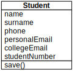
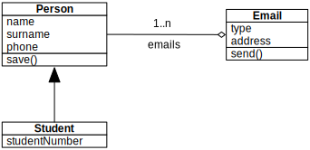
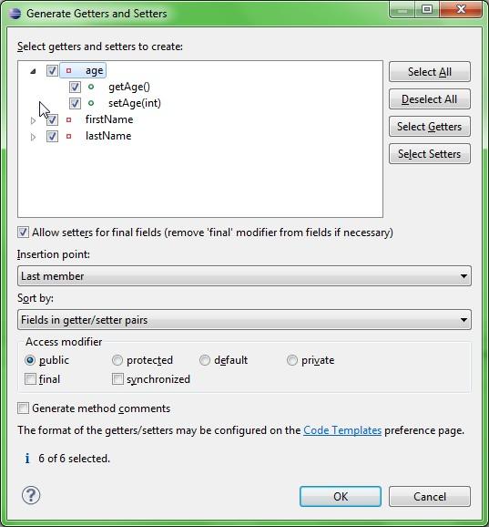
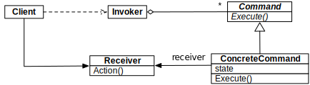

We are not Object Oriented anymore
by @matteocollina
Back to School
Back to School

Back to School
What is an Object?
Objects provides
- Encapsulation
- Accessors
- Abstraction
- Inheritance
- Polymorphism
Objects provides Encapsulation
function myFunc (obj) {
return function () {
return obj.doSomethig()
}
}
Objects provides Accessors
- Do we really need them?
Objects provides Accessors
class Person {
constructor (name) { this._name = name }
get name () { return this._name }
set name (val) { this._name = val }
}
Are Accessor useful?
- to execute code and compute a variable
- but not for JSONificable content
Objects provides Inheritance
class Person { }
class Student extends Person {}
Objects provides Inheritance
- is inheritance needed?
- is inheritance easily remotable?
- is inheritance good for domain data?
- is inheritance good for frameworks?
Objects are GOOD

Are classes good?
- Yes, they encapsulates behavior
Are models good?
class Person {
save (cb) {
db.save(cb)
}
}
Are fat models good?
- is it a behavior of a model to save itself?
- is it good to encapsulate a database connection in a model?
- how can we distribute model access?
Solution: Let's encapsulate the model!
- Java Remote Method Invocation
- CORBA
- REST?
Solution: Build internal APIs!
- APIs as a form of communication between teams!
- GOOD APIs!
- APIs for the sake of ditributing!
- BAD APIs!
...but I only wanted to access my data!
- no code is better than any code
- code for the sake of code is technical debt
- is there something wrong?

Writing code for the sole purpose of deleting it - Greg Young
All code is sh*t - Matteo Collina

by Mayene de La Cruz 
What if we design messages, and not models?
The key in making great and growable systems is much more to design how its modules communicate rather than what their internal properties and behaviors should be. - Alan Key, father of OOP
Image by Marcin Wichary
What is a message?
- Maps
- Arrays
- Strings
- Numbers
- Binary data?
- Streams of data?
The anatomy of a message
{
person: {
name: 'Matteo'
surname: 'Collina'
}
}
The anatomy of a recipient
recipient(message, function (err, result) {
console.log(err, result)
})
- result is another message
Node Callback Style
Node Callback Style
func(msg, function myFunc(err, arg1, arg2, ...) {
/*
this is called asynchronously
err contains an Error object
*/
})
Node Callback Style
- async by default
- no difference if wrapping a db, or a remote endpoint
- Promises are ok as well :)
How to remote a function call?
- how do we encode which function to call?
- truly multi transport from day zero
- we can store it in the message!
Final message
{
role: 'person',
cmd: 'save'
person: {
name: 'Matteo'
surname: 'Collina'
}
}
Command pattern!
Command Pattern!
- we do not want a massive switch/case
- ifs are not good either

Pattern Matching!
var i = bloomrun()
i.add({ cmd: 'save' }, function save (arg, cb) {
alert('saving ' + JSON.stringify(arg))
cb(null, true) })
var msg = {
cmd: 'save',
person: { name: 'matteo' } }
i.lookup(msg)(msg, function (err, result) {
alert([err, result].join(' ')) })
We call such a way of composing code a
Microservice

http://senecajs.org
var seneca = require('seneca')()
seneca.add({
role:'user',
cmd:'login'
}, function (args, callback) {
var loggedIn = args.username === 'matteo' &&
args.password === 'collina'
callback(null, { loggedIn:loggedIn })
})
seneca.listen()
var seneca = require('seneca')()
var client = seneca.client()
client.act({
role:'user',
cmd:'login',
username: 'matteo',
password: 'collina'
}, function (err, result) {
console.log(result.loggedIn)
})
Features
- multiple transports, from bare TCP to busses
- build a monolith, and then split it away
- deep inspection & debugging tools
- authentication/user managament system
- control panel
- integration with HAPI
DEMO!
This presentation

http://github.com/mcollina
Thanks!
If you need help with Node.js